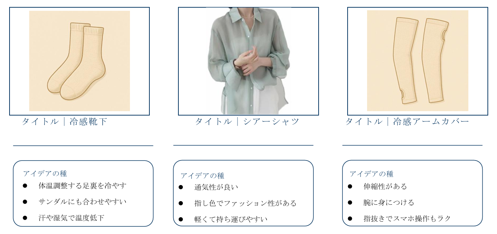
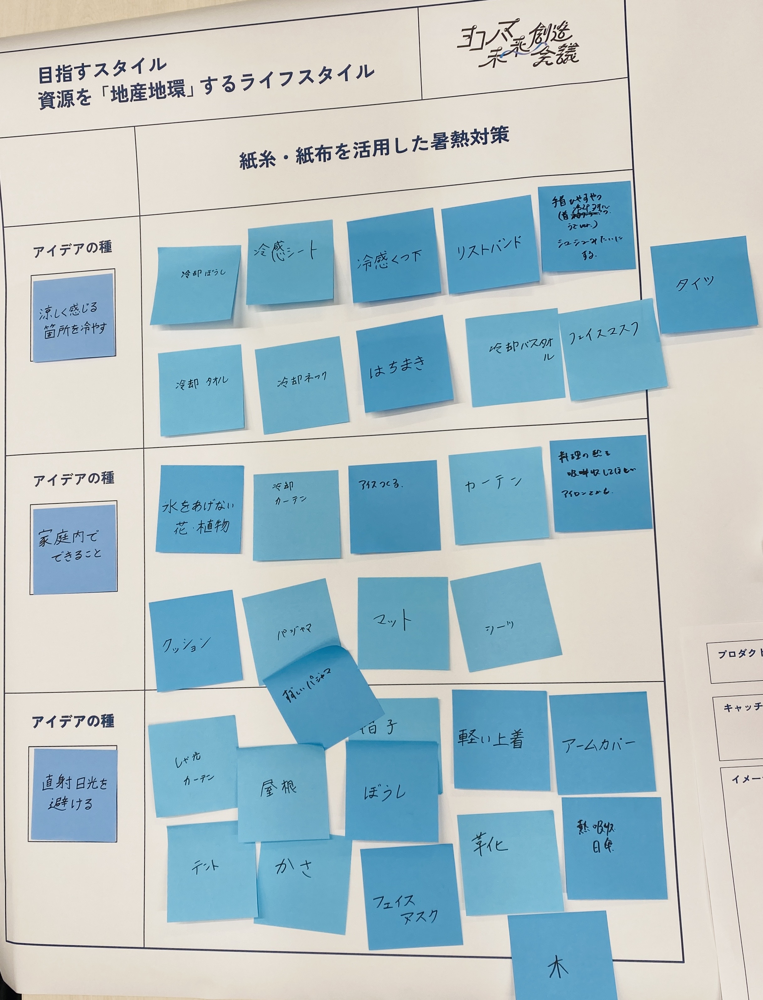
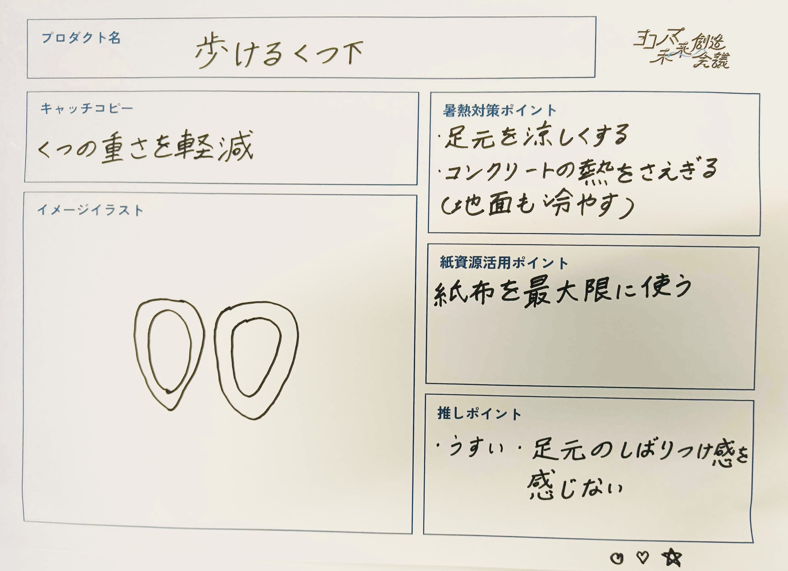
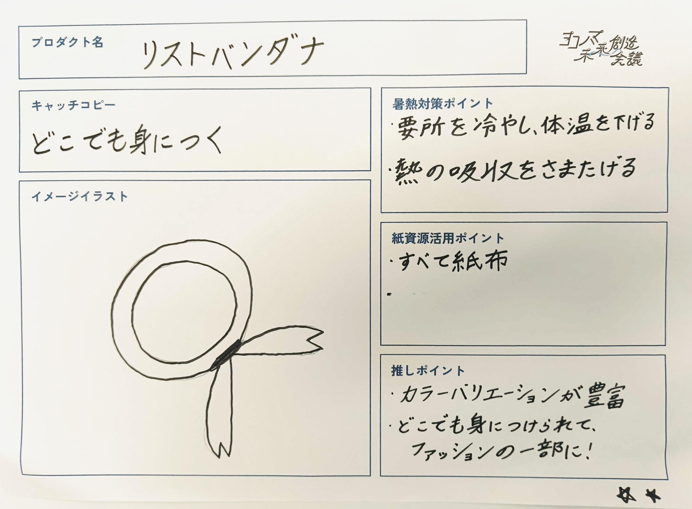
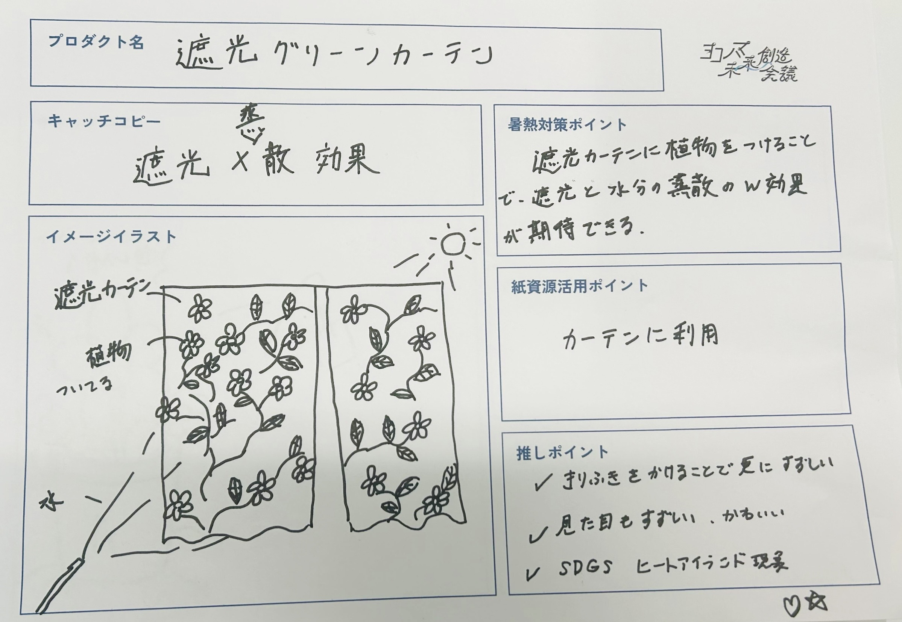

２０２５年６月６日
やったこと
- 暑熱対策事例調査の結果を共有
- アイデアの強制発想
- グループごとに発表
暑熱対策の事例共有
日傘・ハンディファン・ひんやりスプレー・冷感タオル・ひんやり枕・街路樹
グリーンカーテン・打ち水・遮光カーテン・ネッククーラー・ミスト

アイデアの強制発想
結果の共有をもとに、今後のプロトタイプで使いたいアイデアの種を３つに絞り、縦の列に貼る。
１段２分、合計６分間でアイデアを強制発想。２分ごとに下段を記入するため、下の項目に勝手に行かない。

これをもとに、アイデアをシートに具体化する。

右下のマークについて
★：採用したいアイデア/♥：個人的に好きなアイデア
１人２票/合計４票で投票。
グループごとに発表

最終的なグループの多数決により、このアイデアを採用し発表。
発表後、実現の可能性が見えず、方向転換した。
製作過程は別ページへ→
ゼミ時間外活動(製作過程)